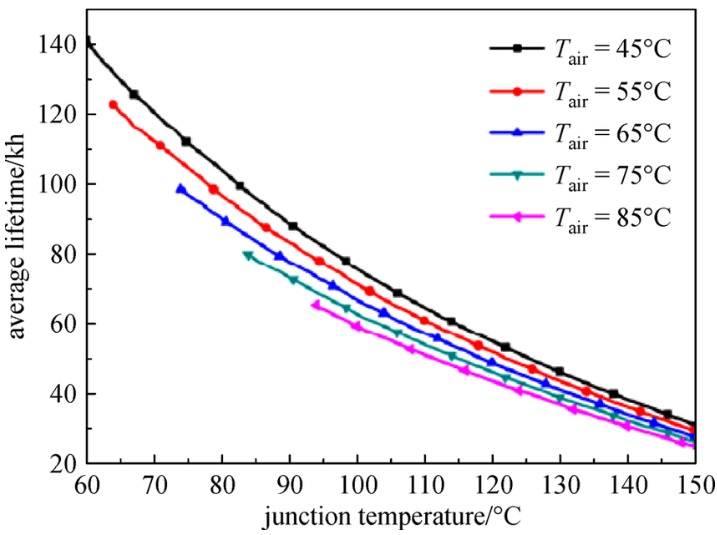

Light Source, a Shelf
Plundered from
- A Systematic Literature Review on Parameters Optimization for Smart Hydroponic Systems
- https://edman007.com/article/Plants/PAR-Lighting-Calculator
Light Source: LED
I'm using two kinds of light sources: a custom-made LED module (blue-white, red-white) and a LED strip (blue-white, red-white, red-red, blue-blue, red-red-blue, 6500K).
Plants need PAR: Photosynthetically Active Radiation, which is generally 400nm to 700nm. PAR should be measured in PPFD ($\mu mol/m^2/s$).

A typical recommendation for leafy vegetables is 150-200 $\mu mol/m^2/s$ with DLI (Daily Light Integral) of $10-15 mol/m^2/d$ for 14 hours. This is a very important value that a novice have to comply, as light source is the most expensive and time-sensitive component in the setup.
It is convenient to use the calculator mentioned in the list (https://edman007.com/article/Plants/PAR-Lighting-Calculator). You can calculate an appropriate height given the power, efficiency, and desired PPFD.
I set to 250 $\mu mol/m^2/s$ for 14 hours which is a bit harsh for seedlings, but it's acceptable for my setup.

Temperature Problems
LED is hot. It is not recommended to use the same light source in summer as heat will be fatal to the roots and growth. The air temperature is not very important as roots will be suffocate when water temperature is higher than 25 celsius.
The solution for this is to use a fan in the water to increase air flow and evaporation.
I have two fans to vent the heat from the LED. This made the light source a noisy and bulky setup, which is not recommended if there's no way to vent the hot air to outside.

A plant is extremely susceptible to the high temperature. Using artificial light in summer is an issue for the plant itself. The majority of the power is consumed by the electric light source rather than a plant. Indoor farms are already suffering from such an inefficiency.
Shelf

A stand or shelf is a baseline hardware have to be tough and versatile. At the first time I used desks. This would be misearable but it's quite acceptable as the desk still usable for a workbench. Later I found it's bullshit to crawl to the beneath, so I stacked this on to the same desk. This unintentionally maked the setting similar to indoor plant stands.

Eventually I tried to install another LED modules and fans to the another desk, as you can see there were a leak. As the desk is made from MDF or something similar to wood, this made nothing attached in the bottom of the desk panel.

The shelf I'm using now is satisfying. It's strong and adjustable, and ridiculously fits to my intentions so there's no irreversible modifications.